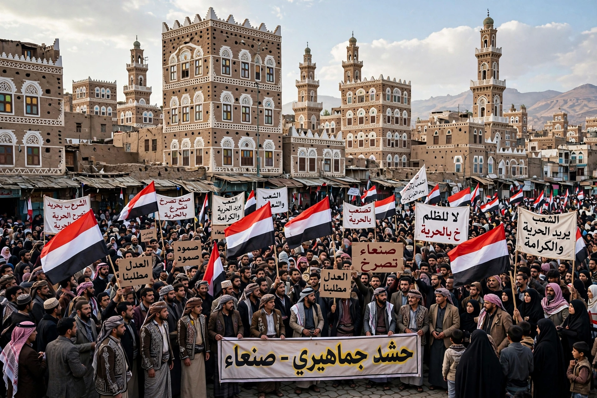

From Wikipedia, the free encyclopedia

| Houthis (Ansar Allah) | |
|---|---|
| Official name | Ansar Allah ("Partisans of God") |
| Founder | Hussein Badreddin al-Houthi |
| Leader | Abdul-Malik al-Houthi |
| Ideology | Zaydi revivalism, anti-imperialism |
| Base | Saada and Sanaa, northern Yemen |
The Houthis, officially known as Ansar Allah, are a Zaydi Shia Islamist political and military movement that emerged in Saada Governorate in northern Yemen in the 1990s. Named after their founding leader, Hussein Badreddin al-Houthi, who was killed by Yemeni government forces in 2004, the movement is led by his brother Abdul-Malik al-Houthi and draws support mainly from Yemen's Zaydi minority, who ruled northern Yemen for a thousand years before the 1962 revolution.
Between 2004 and 2010 the movement fought six wars against the government of President Ali Abdullah Saleh. Exploiting the chaos after Saleh's fall, the Houthis seized the capital, Sanaa, in September 2014 and soon took control of much of western Yemen, including the Red Sea port of Hodeidah. President Hadi fled, and in March 2015 a Saudi-led coalition intervened militarily to restore his government, beginning a devastating civil war and humanitarian crisis. Despite years of bombing, the Houthis retained control of the northwest, including the capital and the majority of Yemen's population.
From November 2023, declaring solidarity with Palestinians during the war in Gaza, the Houthis began attacking commercial shipping in the Red Sea and Gulf of Aden with missiles, drones and boat seizures, severely disrupting traffic through the Bab el-Mandeb chokepoint. The United States and United Kingdom responded with air strikes on Houthi targets from January 2024, and the movement was redesignated a terrorist organisation by the United States. The Houthis are widely reported to receive support from Iran, though they describe themselves as an independent Yemeni movement.